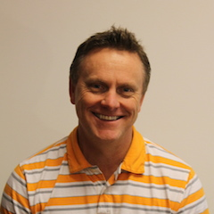

DIY: Using Erlang at a SF Startup From Day 1
Brian WilhiteFounder & CEO of Sqor, Inc.
DIY: Using Erlang at a SF Startup From Day 1
Template for any new startup in SF, or anywhere, to use Erlang in the company from day 1.
It isn’t hard at all, and a much better choice than many languages to build your startup on.
Topics:
* Convincing Business People
* WhatsApp (Similar to the old, “Google uses Python”)
* Sqor Sports
* Orchestrating and communicating with other languages:
** Python
** R
** Javascript/Node
** C#
* Realtime
** Messaging
** Websockets
** RabbitMQ
* Building Data Pipelines
** Data Science in a box
** Search and Key Value
* Hiring Developers (easier than you think):
** Get one or two Erlang Developers (or learn it yourself), then have then teach new hires
** A HUGE competitive advantage over companies that are using less “sexy” languages…think PHP
* Have guts day 1
** Making great bold technical decisions from the beginning sets the right pace
Video
About Brian
Brian Wilhite always dreamed of becoming a professional Baseball player. Yet somehow he ended up working on Wall Street in the financial services industry. After graduating LSU with a degree in International Trade & Finance, and enjoying a successful career playing Baseball for the Tigers, Brianembarked on a 18 year career in the financial services industry. Brian was a partner at Van Kasper & Co, which was acquired by Wells Fargo, and for 3 years Brian helped build Wells Fargo's Capital Markets and Private Client Groups. Brian left Wells Fargo to co-found a boutique Investment Bank that was acquired a few years later. Being a hard wired entrepreneur, Brian saw the emergence of Social Media as an opportunity. Brian has been involved developing and utilizing social and mobile technologies for brand marketers for the last 8 years, before many people even knew Social Media existed. Seeing an opportunity to innovate the Sports Marketing industry, which had not innovated since Mark McCormack founded IMG over 50 years ago, Briansaw a vision to merge traditional sports marketing with digital media. Through a team effort, Sqor was created. GEAUX!!!!! Though he doesn’t have tons of extra time he’s a huge music fan, Ironman athlete, devout father to four boys, amazing skier, small wave surfer, dog lover, philanthropic organizer, and fortunate to have a wonderful lady by his side every day.